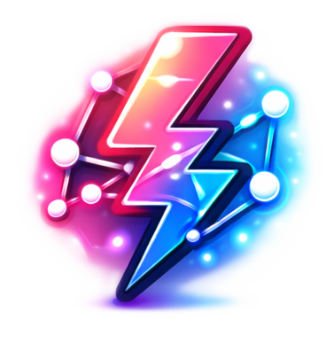

Auswertung

Emotionalisierende Nachrichten gelten nicht als neutrale Informationen, weil sie gezielt Gefühle verstärken und damit die Wahrnehmung beeinflussen. Du erkennst solche Inhalte daran, dass sie schnell von der sachlichen Ebene wegführen und häufig darauf abzielen, dich aufzuregen oder stark zu emotionalisieren. Desinformation sind absichtlich falsche oder irreführende Inhalte,
die erstellt werden, um Menschen zu täuschen oder ihre Meinung gezielt zu beeinflussen.
Desinformation sind absichtlich falsche oder irreführende Inhalte,
die erstellt werden, um Menschen zu täuschen oder ihre Meinung gezielt zu beeinflussen.
 Prüfe Inhalte aus sozialen Medien immer noch einmal.
Vergleiche sie mit anderen, unabhängigen Quellen außerhalb der Plattform,
um sicherzugehen, dass die Informationen stimmen.
Prüfe Inhalte aus sozialen Medien immer noch einmal.
Vergleiche sie mit anderen, unabhängigen Quellen außerhalb der Plattform,
um sicherzugehen, dass die Informationen stimmen.
Hast du schon entdeckt, dass du die Quellen auch im Spiel "recherchieren"
kannst in dem du sie anklickst?
Danke das du bei dem Spiel mit gemacht hast!